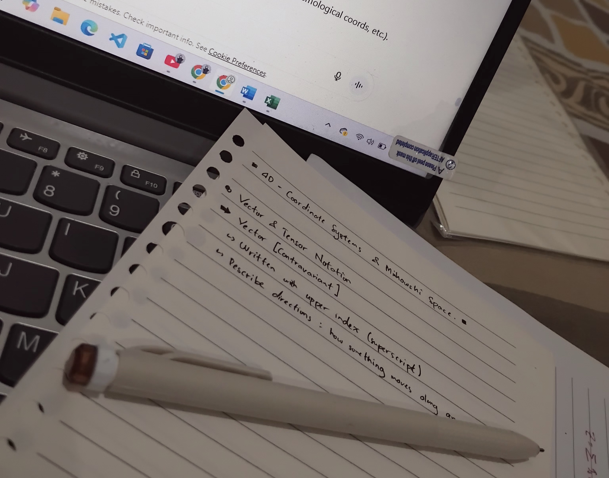

.png)
"Love Brings Out Patience"

By the time I’m writing this, my new term at the university has just started. As a happy consequence, hearing some words of wisdom in between classes has become a common thing again. But frankly, I thought I was still on zero notes of any good quote from campus—then, I came across a note (again). Apparently, I happened to have taken a note of some words on my first day of going to campus this term.
We were studying a rather complicated subject—yes, I study physics. In the middle of the class, my lecturer addressed that this lesson might be difficult at some points. Thus, patience is needed. I sadly can’t remember any more details of what was happening nor what was being said. He probably mentioned that we shall love/like what we’re doing or studying first, then patience will easily come along—because when we like/love something, we’ll be patient about it.
Right now, I have no idea whether I remember it correctly or not, but I guess what I ‘get’ from it is what matters. Regardless of what my lecturer meant of what he said, I took it as something worth keeping in mind. So, I pulled out my phone and take a note that says, “If one likes something, one would be patient about it.”
The sentence in my note may sound a bit ‘abstract’, yet it gives me the impression of a core life principle. It radiates the idea that fondness brings out patience or in other words; patience is a gesture of love or passion. Not just that, what I find even more intriguing is that I reckon it may stand true for various cases or life aspects.
People may comfortably carry on in their jobs despite any difficulties because they’re passionate about it or simply love what they do their job for. On the surface, it may look like they take everything easily, but in reality, it’s passion and love that sustain their patience. The same thing works in studying too—just like my lecturer had phrased. Persisting through a complicated classes and courses would be easier when there’s fondness within. I believe that people who are great in their respective fields now, once struggled as well. But, their passion towards their fields did a good job in maintaining their patience to face any challenges they had or have ahead.
As a student, the entire idea of the sentence encourages me to a whole new level. I feel reassured that even getting in some issues while studying or generally doing anything is normal, and I’ll manage to be patient enough to endure it because I’m fond of what I’m doing.
~~
Waitt! You may think that’s the end of this piece. Well, yes it was. But I’d like to add another point of view to the quote. Supposedly, it also applies to our interaction or relation as social beings. Why do you think our parents are willing to handle how difficult we can be at times for ages? Or teachers are willing to teach us despite of any absurd challenges they need to face? And our friends get along with any of our quirks? If you think it’s because they don’t find it as a problem at all, then we have different opinions. I genuinely think that’s not the case. They do find us troublesome at times, but their ‘love’ is enough of a reason to be patient. At this point, I may know nothing about love, but now I guess that’s how it’s supposed to work. Lovers don’t find each other perfect. Instead, love brings out patience to overcome the imperfections.
Ps: What am I even saying haha? Especially the closing line. By the way, I haven’t been that comfortable saying ‘love’ too many times, so I tried using synonyms/alternatives. But actually, saying (typing) it feels kind of good, haha. I might get comfortable with it.